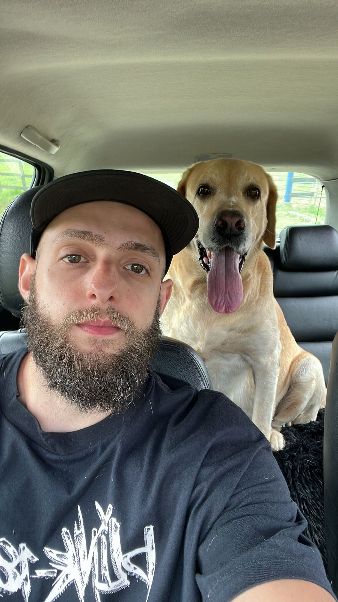
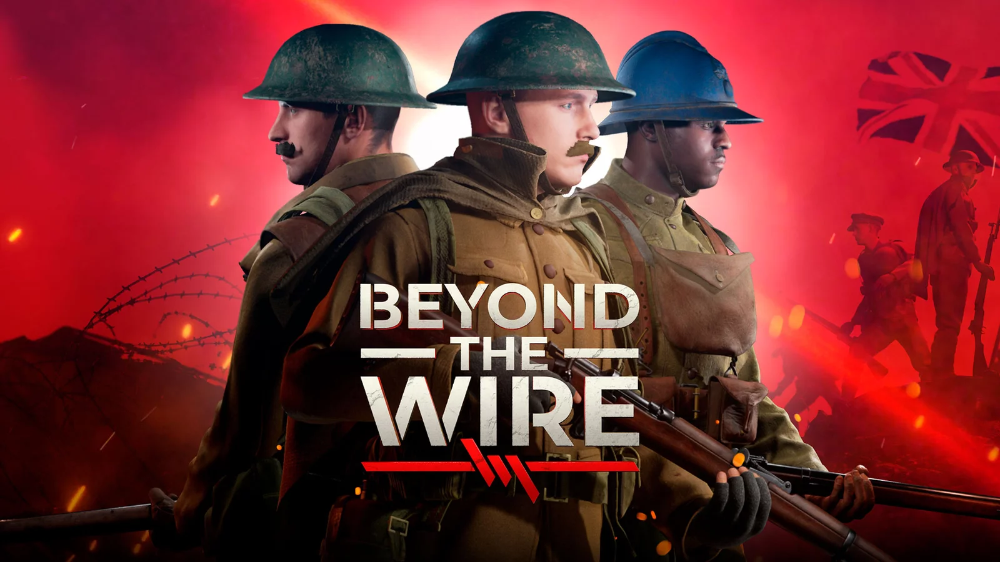

Intro

Hello, I'm Wanderson, 31 years old. I began my career at the age of 17 in the hospitality industry, where I held
various positions, gaining valuable leadership experience. I highlight my role as a manager at a hotel with 436
rooms and 3 restaurants, where I led large teams and implemented strategies to optimize operations and ensure
excellent service to guests.
Today, I am a game developer. My journey from player to dedicated professional in the industry underscores my
commitment to mastering the art and pushing technological boundaries.Dedicated professional with almost 3
years of hands-on experience in Unreal Engine and C++. Actively delving into low-level programming, specializing
in graphics and network programming, to elevate my impact on game development projects. Eager to leverage
this unique blend of hands-on experience and self-motivated mastery to excel in a challenging role.
By the way, check out my work experience
Skills
-
C++ | C# | Unreal Engine | Lua
-
Visual Studio | Rider | JIRA | Confluence
-
Perforce | Github
Contenders Arena (Gamecan)
 Worked on diverses areas of gameplay.
Implemented and refactored character's abilities.
Fixed animations bug.
Executed seamless UI implementations and tackled numerous UI bugs, such as introducing a game-changing 'Survey Feedback Button' that effortlessly redirects players to a dedicated website, empowering them to provide invaluable feedback via an intuitive form.
Worked on diverses areas of gameplay.
Implemented and refactored character's abilities.
Fixed animations bug.
Executed seamless UI implementations and tackled numerous UI bugs, such as introducing a game-changing 'Survey Feedback Button' that effortlessly redirects players to a dedicated website, empowering them to provide invaluable feedback via an intuitive form.
SQUAD (OffWorld)
Played a pivotal role within a dedicated task force focused on implementing the Emote System, particularly overseeing the gameplay aspects.
Collaborated closely with designers and fellow engineers to ensure the seamless integration of captivating gameplay features.
Facilitated effective communication and coordination across teams, contributing to the successful delivery of cohesive and engaging gameplay experiences.
This initiative proved to be a significant feature for the 4.1 release.
Beyond The Wire (OffWorld)

Game Credits
Despite joining the project close to its release, I made significant contributions to resolve numerous bugs,
ensuring a polished final product. Transitioning seamlessly into the QA team,
I diligently tested and validated a substantial volume of fixes, ensuring the game's readiness for launch.
Although my time with the Beyond the Wire team was brief, I depart with pride, having earned my first game credit.🎉
Practicing Graphics with OpenGL(GLSL) with C++
Skills: C++ & OpenGL
Creating and manipulating windows and viewport;
Drawing Meshes/Models;
Using shaders and uniforms;
Using GLM(glew library) to transform models;
Indexed Draws;
Projections;
Creating and controlling a camera;
Mapping textures;
Phong lighting models;
Directional, Spot and Point lights;
Importing models;
Creating and using shadow maps;
Implementing a Skybox.
Vehicle Coding
My inaugural Unreal project, driven by my passion for cars, fills me with immense pride.
Skills: C++ & Physics
Mechanical movements;
Wheels spinning;
Acceleration | Deceleration;
Handbrakes;
Suspension's system.
"True FPS"
I'm currently working on a realistic FPS game where players can see the full body of their character, similar to real life.
I've been focusing on 3C (Character, Camera, and Controls) to align it with the final vision.
Dealing with Unreal Engine's default animations has been challenging, but we've managed to implement character movement, rotation, and IK for hands and feet.
I've also begun developing the user interface, starting with the health aspect.
The project is documented on Confluence and managed using JIRA.
Given its significance, this project may require more time commitment as I prioritize it as my main project while also exploring other areas of development, such as delving into GAS in another project and dedicating time to study concepts of computer graphics.
A Multiplayer plugin
This Multiplayer Plugin, seamlessly integrating with Unreal Engine,
leverages Steam's Online SubSystem for robust multiplayer functionality.
Currently deployed in my FPS project mentioned earlier.
Skills
C++ Unreal Engine
Online Subsystem, Steam Services
Implemented networking replication, foundational character animations, and a user interface.
The UI facilitates server listing, hosting and joining functionality.
Single Player combat (2 yrs ago)
Skills
C++ Unreal Engine
Animations, GameModes, UI.
Singleplayer game, pickup items, basic AI enemies.
Mars Marine - Blueprint Only (2 yrs ago)
Skills
100% Blueprints Only.
Menu Widgets (Marine image & Health Bar / Aliens Image / Kills Counter / Waves Counter / Warning message when player step out of the mission area)
Character Animations (Idle, walk, Death)
Alien Animations (Idle, Walk, Attack, Death)
Muzzle Particle Effects + Hitting Particle FX's (when hitting an enemy or a surface)
Sound Cues (Firing weapon / hitting the enemy (A flesh sound))
Notifies - used to link functions or sounds to animations
Functions pure & const
Overlap Events
Crystal Cavern - Blueprint Only (2yrs ago)
Skills
100% Blueprints Only.
Level design.
This page is meant to feature mainly math and physics problem-solving using
Love2D, a game engine, and
Lua. Additionally, I'll showcase a few short games developed with this engine.
Boids - FLocking Simulation
Boids is an artificial life program that simulates the flocking behavior of birds.
Developed by Craig Reynolds in 1986, it models the simple rules that govern the movement of birds in a flock, such as cohesion, separation, and alignment.
These rules enable individual agents, or "boids," to exhibit complex group behaviors, including flocking, swarming, and schooling.
Reference
The key principles of boids behavior are:
- Cohesion: Boids are attracted to the center of mass of nearby boids, leading to the formation of cohesive groups or flocks.
- Separation: Boids avoid collisions by maintaining a minimum distance from each other, preventing overcrowding and ensuring individual safety.
- Alignment: Boids align their velocity with that of nearby boids, resulting in coordinated movement and direction within the flock.
Zuke - platform game 🎮
While delving into Lua programming and fueled by a passion for game development, I discovered Love2D, an engine that piqued my interest. Within this endeavor, I utilized a physics library known as Windfield to manage body collisions effectively. I familiarized myself with the intricacies of creating animations from sprites (PNG images), iterating through a spreadsheet of static images to generate dynamic animations. Additionally, I acquired proficiency in employing 'Tiled', a program for crafting maps using Tilesets. The resultant project comprises two levels, with progression from one to the other triggered upon reaching a flag. Furthermore, the game automatically saves the player's progress within the current level, ensuring continuity upon exiting and re-entering the game environment. Added a music for the game and a sound effect for jumping
Skills: Lua | LOVE2D | Physics | 2D game intricacies
Top-Down shooter 🎮
Very simple top-down shooter, while familiarizing myself with the Love2D engine and its libraries.
Contact
If you have any inquiries or would like to get in touch, feel free to...
Send me an email